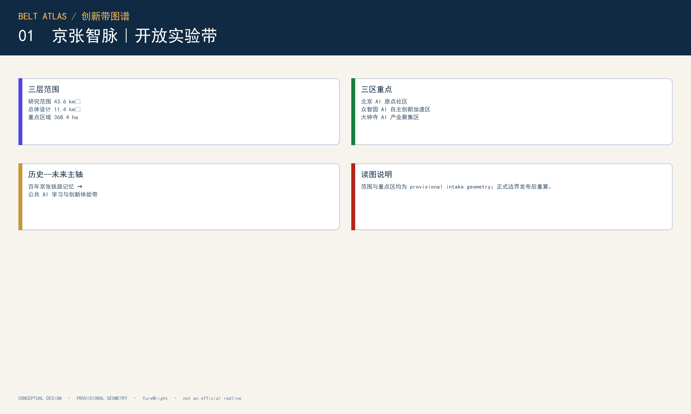
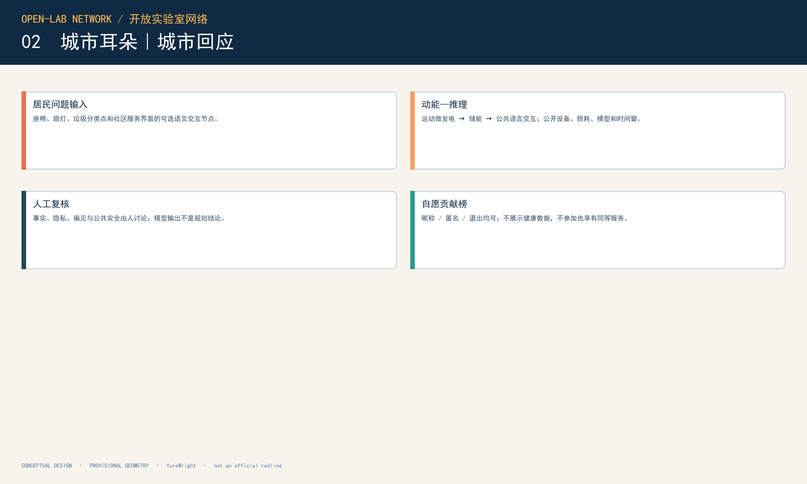
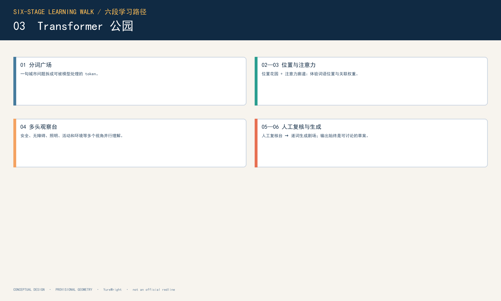
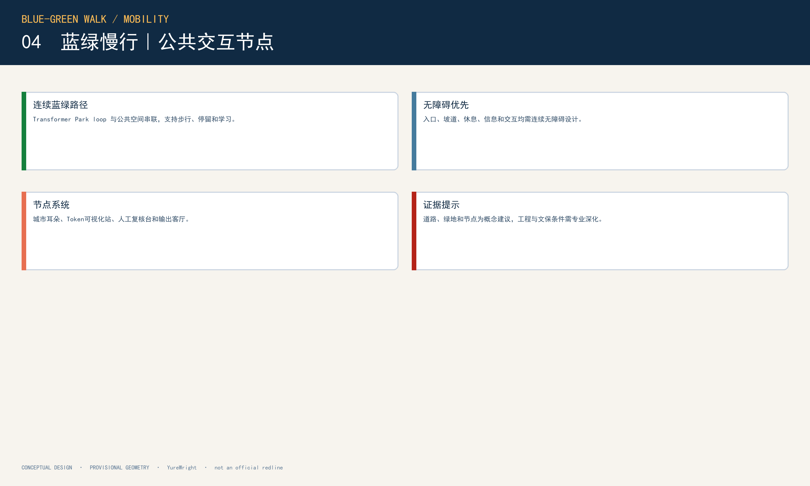
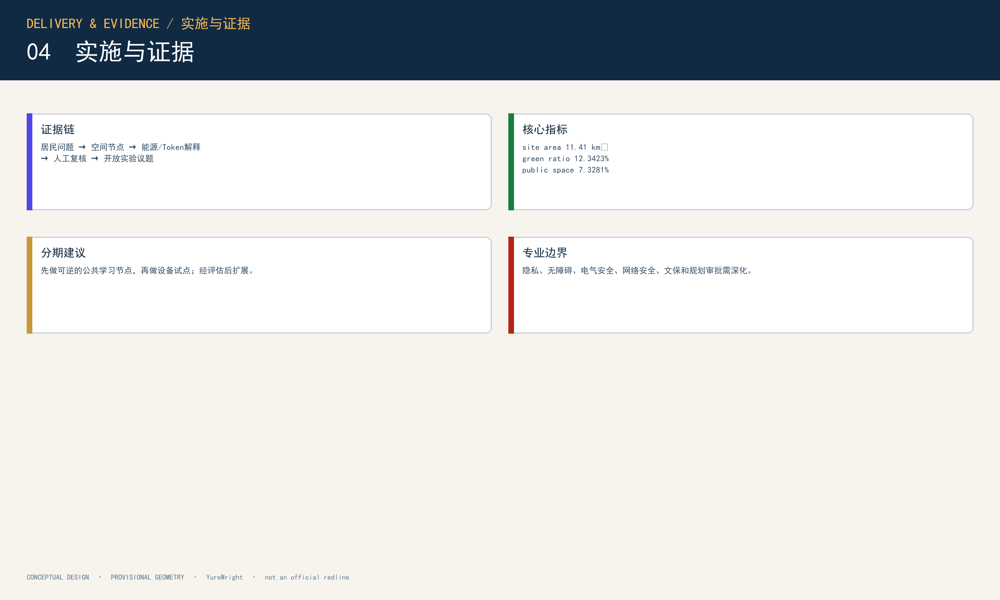

CONCEPTUAL URBAN DESIGN / 概念性城市设计
城市作为开放实验室：百年京张 AI 创新带
以公开空间、居民交互、能源解释和 Transformer 公园，把城市变成可提出问题、共同测试、人工复核和持续迭代的开放实验室。
临时边界：provisional intake only；不作为官方红线、审批依据或精确面积依据。
可交互体验原型
Transformer Park interaction script Token energy interaction script
Transformer 公园：一句话如何成为输出
输入一句城市问题，游览路径依次模拟分词、位置编码、注意力、多头与层叠变换、人工复核和逐词生成。
动能—推理 Token 可视化
Token 是大模型处理的文本单元，不是货币，也不是积分。运动微发电、储能损耗、节点用电和输入/输出 token 只能在公开假设下并列估算。
城市 Token 贡献榜自愿参与、默认匿名、可退出；不展示健康数据，不参加榜单也享有同等公共 AI 服务。
总览地图

三层范围、三区两翼、京张文化—AI 体验主轴和重点节点。
三层范围
统筹研究范围、总体设计范围、重点区域范围逐级落实产业生态、城市更新、重点片区和开放实验机制。

重点区域
众智园、北京 AI 原点社区、大钟寺 AI 产业聚集区构成输入—理解—输出的创新学习回路。

用地分区、交通慢行、蓝绿公共空间

图面为概念建议；设施、道路、文保、无障碍和工程条件需专业深化。
建筑、更新项目与 AI 场景
城市耳朵、动能—推理 Token 可视化站、Transformer 公园、开源记忆台、可解释性工坊和输出客厅组成公共 AI 场景网络。
核心指标
这些是从提交的 provisional geometry 复算的概念设计模型值；正式边界发布后必须重算。

任务覆盖、自检状态、来源与假设
任务覆盖见 compliance_matrix.json；自检状态见 self_check.json；来源见 sources.json；假设见 assumptions.json。空间复核、视觉包装和专业证据需随每次修改重新运行。
v3 视觉审阅修订记录
根据人工审阅反馈：中文字体改为 SimHei，展板采用大字号双栏卡片，减少拥挤文字，明确区分概念性建议、临时边界和正式专业深化事项。